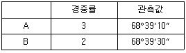
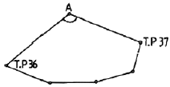
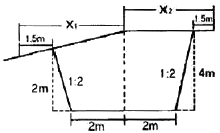
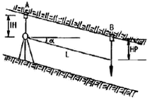
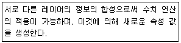

지적기사 (2011-03-20 기출문제)
1과목: 지적측량
1. 다음 중 지적기준점 측량의 절차가 옳은 것은?
- 계획의 수립→준비 및 현지답사→선점 및 조표→관측 및 계산과 성과표의 작성
- 계획의 수립→선점 및 조표→준비 및 현지답사→관측 및 계산과 성과표의 작성
- 계획의 수립→선점 및 조표→관측 및 계산과 성과표의 작성→준비 및 현지답사
- 계획의 수립→준비 및 현지답사→관측 및 계산과 성과표의 작성→선점 및 조표
(정답률: 100%)

2. 다음 중 광파기측량방법에 따라 다각망도선법으로 지적삼각보조점측량을 하는 때에 1도선의 거리 기준으로 옳은 것은?
- 1km 이하
- 2km 이하
- 3km 이하
- 4km 이하
(정답률: 알수없음)
3. 삼각형의 각 변이 길이가 각각 30m, 40m,50m일 때 이 삼각형의 면적으로 옳은 것은?
- 600m2
- 756m2
- 1000m2
- 1200m2
(정답률: 알수없음)
4. 다음 중 지적 관련 법률에 따른 측량기준에서 회전타원체의 편평률로 옳은 것은?
- 약 1/6378
- 약 1/2500
- 약 1/500
- 약 1/299
(정답률: 알수없음)
5. 다음 중 평판측량방법에 따라 측정한 경사거리가 95m일 때 수평거리로 옳은 것은? (단, 조준의의 경사분획은 18이다.)
- 92.45m
- 92.50m
- 93.45m
- 93.50m
(정답률: 알수없음)
6. 다음 중 지적측량의 방법에 해당하지 않는 것은?
- 경위의측량
- 전파기측량
- 관성측량
- 위성측량
(정답률: 알수없음)
7. 다음은 경중률이 서로 다른 데오도라이트 A, B를 사용하여 동일한 측점의 협각을 관측한 결과일 때 최확값은?

- 68° 39‘ 15“
- 68“ 39‘ 18”
- 68° 39‘ 20“
- 68° 39‘ 23“
(정답률: 알수없음)
8. 다음 중 지적삼각점을 관측하는 경우 연직각의 관측 및 계산 기준에 대한 설명으로 옳지 않은 것은?
- 관측치의 최대치와 최소치의 교차가 40초 이내이어야 한다.
- 연직각의 단위는 ‘초’로 한다.
- 각 측점에서 정반으로 각 2회 관측하여야 한다.
- 2개의 기지점에서 소구점의 표고를 계산한 결과 그 교차가 허용범위 이하일 때에는 그 평균치를 표고로 한다.
(정답률: 알수없음)
9. 다음 중 임야도를 갖춰 주는 지역의 세부측량에서, 지적도의 축척에 따른 측량성과를 임야도의 축척으로 측량결과도에 표시하는 방법을 옳게 설명한 것은?
- 임야도의 축척에 따른 임야 경계선의 좌표를 구하여 임야측량결과도에 전개하여야 한다.
- 지적도의 축척에 따른 임야 분할선의 좌표를구하여 임야측랴결과도에 전개하여야 하나.
- 임야 경계선과 도곽선을 접합하여 임의로 임야측량결과도에 전개하여야 한다.
- 지적도의 축척에 따른 측량결과도에 표시된 경계점의 좌표를 구하여 임야측량결과도에 전개하여야 한다.
(정답률: 알수없음)
10. 다음 중 온도에 따른 줄자의 신축을 팽창계수에 따라 보정한 오차의 조정과 관련이 있는 것은?
- 계통오차
- 착오
- 우연오차
- 과대오차
(정답률: 알수없음)
11. 다음과 같은 지적도근점측량에서 교회법을 시행하여 36에서 A점을 본 방위각이 57°, 37에서 A점을 본 방위각이 315°일 때 A점의 교각은 얼마인가?

- 78°
- 102°
- 168°
- 192°
(정답률: 알수없음)
12. 다음 중 지적도근점측량에서 지적도근점을 구성하는 도선의 형태에 해당하지 않는 것은?
- 다각망도선
- 개방도선
- 결합도선
- 폐합도선
(정답률: 알수없음)
13. 다음 중 세부측량에서의 거리 측정에 대한 설명으로 옳지 않은 것은?
- 평판측량방법에 따른 세부측량에서 지적도를 갖춰 두는 지역에서는 거리측정단위를 5cm로 한다.
- 경위의측량방법에 따른 세부측량에서는 거리측정단위를 1cm로 한다.
- 평판측량방법에 따른 세부측량에서 임야도를 갖퉈 주는 지역에서는 거리측정단위를 10cm로 한다.
- 평판 측량방법으로 거리를 측정하여 신축의 보정이 필요한 경우 도곽선이 늘어난 경우에는 실측거리에 보정량을 더하고, 줄어든 경우에는 실측거리에서 보정량을 뺀다.
(정답률: 알수없음)
14. 다음 중 전파기 또는 광파기측량방법에 따른 지적삼각점의 점간거리는 몇 회 측정하여야 하는가?
- 5회
- 4회
- 3회
- 2회
(정답률: 알수없음)
15. 다음 중 지적측량성과를 결정함에 있어 측량성과와 검사성과의 연결교차 허용범위의 연결이 옳은 것은? (단, M은 축척분모)
- 지적삼각점:0.15미터
- 지적삼각보조점:0.20미터
- 지적도근점(경계점좌표등록부 시행지역:0.15미터
- 경계점(경계점좌표등록부 시행지역:10분의 3M밀리미터
(정답률: 알수없음)
16. 다음 중 축척 1/1200 지역 토지의 면적을 전자면적계로 2회 측정한 결과가 각 138232m2, 138347m2이었을 때 처리방법으로 옳은 것은?
- 작은 면적을 측정면적으로 사용한다.
- 큰 면적으로 측정면적으로 사용한다.
- 평균하여 측정면적으로 사용한다.
- 재측량하여야 한다.
(정답률: 100%)
17. 다음 중 경위의측량방법에 따른 세부측량의 관측 및 계산 기준으로 옳지 않은 것은?
- 도선법 또는 방사법에 따른다.
- 1방향각의 수평각 측각공차는 40초 이내이어야 한다.
- 관측은 20초독 이상의 경위의를 사용한다.
- 연직각의 관측은 정반으로 1회 관측하여 그 교차가 5분 이내일 때에 그 평균치를 연직각으로 한다.
(정답률: 알수없음)
18. 다음 중 지적삼각보조점의 수평각 관측방법으로 옳은 것은?
- 단각법
- 배각법
- 방향관측법
- 각관측법
(정답률: 알수없음)
19. 다음 중 데오도라이트의 3축 조건으로 옳지 않은 것은?
- 시준축 ㅗ 수평축
- 수평축 ㅗ 수직축
- 수직축 ㅗ 기포관축
- 수평축//수직축
(정답률: 알수없음)
20. 다음 중 다각망도선법에 따른 지적삼각보조점의 관측 및 계산 기준에 대한 설명으로 옳지 않은 것은? (단, n은 폐색변을 포함한 변의 수, S는 도선의 거리를 1천으로 나눈 수를 말한다.)
- 수평각관측은 배각법에 따를수 있다.
- 관측은 20초독 이상의 경위의를 사용하도록 한다.
- 도선별 평균방위각과 관측방위각의 폐색오차는 ±10√n 초 이내로 한다.
- 도선별 연결오차는 (0.⑤+0.⑤×S)미터 이하로 한다.
(정답률: 알수없음)
2과목: 응용측량
21. 회전주기가 일정한 인공위성에 의한 특성이 아닌 것은?
- 얻어진 영상이 정시투영에 가깝다.
- 판독이 자동적이고 정향화가 가능하다.
- 넓은 지역을 동시에 측정할 수 있다.
- 어떤 지점이든 원하는 시기에 관측할 수 있다.
(정답률: 알수없음)
22. 지하시설물탐사에서 지하에 매설된 전도체에 전류가 흐르면 전도체를 중심으로 원통형자장이 형성되는데 이 자장의 세기(H)에 대한 설명으로 옳은 것은? (단, I는 전류, r은 전도체에서 임의의 점지 떨어진 거리)
- H는 I와 r에 비례한다.
- H는 I와 비례하고 r에 반비례한다.
- H는 I에 반비례하고, r에 비례한다.
- H는 I와 r에 반비례한다.
(정답률: 알수없음)
23. 카메라의 초점거리가 153mm인 수직사진의 경우, 촬영축척을 1/5000으로 하고자 할 때 촬영고도를 얼마로 해야 하는가?
- 153m
- 756m
- 1310m
- 5000m
(정답률: 알수없음)
24. 다음 중 원격탐사에 사용되는 전자 스펙트럼에서 가장 파장이 긴 것은?
- 자외선
- 초록색
- 빨강색
- 적외선
(정답률: 알수없음)
25. 그림과 같은 단면에서 도로 용지폭(x1+x2)은? (단위:m)

- 7.5m
- 11.5m
- 15m
- 19m
(정답률: 알수없음)
26. 중복된 같은 고도의 항공사진이 연직사진일 경우 시차차로 알 수 있는 것은?
- 토지의 이용 상태
- 두 점 간의 높이
- 사진의 축척
- 1매의 사진이 포용하는 면적
(정답률: 알수없음)
27. 원격탐사의 센서에 대한 설명으로 옳지 않은 것은?
- SLAR은 능동적 센서에 속한다.
- 비디콘 사진기는 수동적 센서에 속한다.
- ETM+는 능동적 센서에 속한다.
- HRV 센서는 수동적 센서에 속한다.
(정답률: 알수없음)
28. 상향기울기 7.5/1000와 하향기울기 45/1000기 반지름 2500m의 곡선 중에서 만날 경우에 곡선시점에서 25m 떨어져 있는 점의 종거 y값은 약 얼마인가?
- 1.0m
- 0.3m
- 0.4m
- 0.5m
(정답률: 알수없음)
29. 등고선의 간격이 2m인 지형도에서 100m 등고선상의 A점과 140m 등고선상의 B점간을 일정기울기 7%의 도로로 만들면 AB간 도로의 실제 경사거리는?
- 572.83m
- 515.53m
- 472.83m
- 415.53m
(정답률: 알수없음)
30. 지질, 토양, 수자원 및 삼림조사 등의 판독작업에 주로 이용되는 사진은?
- 적외선 사진
- 흑백 사진
- 번사 사진
- 위색 사진
(정답률: 100%)
31. 수준측량의 기고식과 관계있는 것은?
- 기계적 고도수정
- 기압수준측량
- 간접수준측량
- 야작기입계산
(정답률: 알수없음)
32. GPS 시스템 오차의 종류가 아닌 것은?
- 위성 시계 오차
- 대류권 굴절 오차
- 위성 궤도 오차
- 영상 표점 오차
(정답률: 60%)
33. 경사 터널의 고저차를 구하기 위하여 다음 그림과 같이 고저각(a), 경사거리(L)를 측정하였을 때 AB의 고저차는? (단, IH=1.35m, HP=1.66m, a=30", L=40m)(오류 신고가 접수된 문제입니다. 반드시 정답과 해설을 확인하시기 바랍니다.)

- 35.0m
- 20.3m
- 19.7m
- 17.0m
(정답률: 64%)
34. 단곡선 설치에서 교각 I=60", 반지름 R=100m일 때 중앙종거법에 의한 원곡선을 측정할 때 8등분점의 중앙종거는?
- 0.86m
- 1.71m
- 2.71m
- 3.27m
(정답률: 34%)
35. 터널 측량에서 중심선 측량의 목적이 아닌 것은?
- 터널 중심선 방향의 확인
- 터널 입구간의 거리 확인
- 터널 이구의 중심선 상에 기준점 설치
- 터널 외 기준점의 설치
(정답률: 84%)
36. 현장에서 수준측량을 정확하게 수행하기 위해서 고려해야할 사항이 아닌 것은?
- 전시와 후시의 거리를 동일하게 한다.
- 기포가 중앙에 있을 때 읽는다.
- 표척이 연직으로 세워졌는지 확인한다.
- 레벨의 설치 횟수는 홀수회로 끝나도록 한다.
(정답률: 100%)
37. 축척이 1/5000인 지형도에서 경사가 10%일 때 도상등고선 간 수평거리는 얼마인가? (단, 등고선 간격은 5m)
- 1cm
- 2cm
- 5cm
- 10cm
(정답률: 알수없음)
38. 우리나라에서 제작되고 있는 국가기본도에서 축척 1/10000의 경도차 및 위도차는 얼마인가?
- 경도차 1‘ 30“ 위도차 1’ 30”
- 경도차 3‘ 00“ 위도차 3’ 00”
- 경도차 7‘ 30“ 위도차 7’ 30”
- 경도차 15‘ 00“ 위도차 15’ 00”
(정답률: 알수없음)
39. GPS 측량에서 사이클 슬립(cycle slip)의 주된 원인은?
- 높은 위성의 고도
- 높은 신호감도
- 낮은 신호잡음
- 지형ㆍ지물에 의한 신호단절
(정답률: 알수없음)
40. 노선측량에서 중심선을 선정하고 설치(도상 및 현지)하는 단계의 측량은?
- 계획조사측량
- 실시설계측량
- 세부측량
- 노선측량
(정답률: 알수없음)
3과목: 토지정보체계론
41. 다음 중 공간데이터베이스를 구축하기 위한 자료 취득 방법과 가장 거리가 먼 것은?
- 기존 지형도를 이용하는 방법
- 지상 측량에 의한 방법
- 항공사진 측량에 의한 방법
- 통신장비를 이용하는 방법
(정답률: 알수없음)
42. 다음 중 지적전산자료를 활용한 정보화사업에 포함되지 않는 것은?
- 임야대장의 전산화 업무
- 수치지도와 지적도면의 중첩 분석 결과 저장 업무
- 토지대장의 전산화 업무
- 정보지리시스템을 통한 지적도 저장 업무
(정답률: 80%)
43. 다음 중 다목적지적의 3대 기본요소에 해당하지 않는 것은?
- 측지기본망
- 필지식별자
- 기본도
- 지적중첩도
(정답률: 알수없음)
44. 다음 중 필지중심토지정보시스템(PBLIS)을 구성하는 내용에 해당하지 않는 것은?
- 지적측량성과작성시스템
- 지적측량자료처리지적측량
- 지적공부관리지적측량
- 지적측량지적측량
(정답률: 알수없음)
45. 다음 중 아래의 설명에 해당하는 공간 분석 유형은?

- 중첩
- 연결성 추정
- 네트워크 분석
- 보간법
(정답률: 알수없음)
46. 다음 중 우리나라의 지적측량에서 사용하는 직각좌표계의 투영법 기준으로 옳은 것은?
- 방위도법
- 정사투영법
- 가우스상사이중투영법
- 원추투영법
(정답률: 알수없음)
47. 다음 중 지적재조사사업의 목적으로 가장 거리가 먼 것은?
- 지적불부합지 문제 해소
- 토지의 경계복원능력 향상
- 지하시설물 관리체계 개선
- 능률적인 지저관리체제 개선
(정답률: 100%)
48. 다음 중 벡터데이터에 비하여 래스터데이터가 갖는 특징으로 옳은 것은?
- 자료 구조가 단순하다.
- 위상 구조의 표현에 적합하다.
- 중첩연산을 용이하게 구현할 수 있다.
- 원격탐사자료와의 연계처리가 용이하다.
(정답률: 알수없음)
49. 다음 중 지적사무 전산처리 규정에 따른 코드의 구성에서 대장구분, 본번, 부번은 각각 몇 자리로 구성하는 것을 기준으로 하는가?
- 대장구분1자리, 본번 4자리, 부번 4자리
- 대장구분1자리, 본번 3자리, 부번 3자리
- 대장구분2자리, 본번 3자리, 부번 4자리
- 대장구분2자리, 본번 4자리, 부번 3자리
(정답률: 알수없음)
50. 다음 중 테이블을 삭제하는 SQL 명령어로 옳은 것은?
- DROP TABLE
- DELETE TABLE
- ALTER TABLE
- ERASE TABLE
(정답률: 알수없음)
51. 다음 토지정보시스템의 공간데이터 취득 방법 중 선격이 다른 하나는?
- 스캐너에 의한 방법
- COGO에 의한 방법
- GPS에 의한 방법
- 토탈스테이션에 의한 방법
(정답률: 알수없음)
52. 다음 중 좌표가 입력되어야 할 곳에 못 미치게 입력되어 폴리곤이 폐합되지 않게 만드는 오류에 해당하는 것은?
- 오버슈트(overshoot)
- 언더슈트(undershoot)
- 슬리버(sliver)
- 스파이크(spike)
(정답률: 알수없음)
53. 다음 중 래스터형식의 자료에 해당하는 파일포맷은?
- GeoTIF
- DXF
- SHAPE
- DWG
(정답률: 알수없음)
54. 다음 중 필지중심토지정보시스템(PBLIS)에 관한 설명으로 옳지 않은 것은?
- 수치지형도를 도형데이터의 기반으로 하여 구축한 토지정보시스템이다.
- 지적도면과 대장 정보를 일체화한 통합정보시스템이다.
- PBLIS와 LMIS를 통합하여 제공하는 시스템이 한국토지정보시스템(KLIS)이다ㅑ.
- 다른 시스템과의 정보 공유로 통합된 토지 관련 민원 서비스를 제공할 수 있다.
(정답률: 알수없음)
55. 다음 중 공간데이터의 위상구조(Topology)에 관한 설명으로 옳지 않은 것은?
- 자료구조가 복잡하여 여러 레이어의 중첩이나 분석에 기술적으로 난이도가 있다.
- 복잡한 네트워크상에서 면을 폐합하고 노드를 형성하는 과정에서 불확실성과 오류를 발생할 수 있다.
- 모든 노드를 확인하는데 많은 시간이 소요된다.
- 자료구조가 복잡하여 객체들간의 공간적 관계에 대한 정보를 판단할 수 없다.
(정답률: 알수없음)
56. 다음 중 GIS데이터의 표준화에 해당하지 않는 것은?
- 데이터 모델(Data Model)의 표준화
- 데이터 내용(Data Contents)의 표준화
- 데이터 제공(Data Supply)의 표준화
- 위치창조(Location Reference)의 표준화
(정답률: 알수없음)
57. 다음 중 GIS의 데이터 교환 표준 포맷은?
- MOSS
- DX-90
- TIGER
- SDTS
(정답률: 알수없음)
58. 다음 중 토지정보체계의 공간데이터 관리에 필요한 메타데이터(metadata)에 관한 설명으로 옳지 않은 것은?
- 데이터의 내용, 품질, 조건 및 특징 등을 저장한 데이터로 데이터의 이력서이다.
- 시간이 지나도 사용자에게 일관성 있는 데이터를 제공하는 것이 가능하도록 한다.
- 속성정보에 대한 정보를 포함하지 못하여 계속적인 개술개발이 요구된다.
- 데이터의 활용과 유통을 용이하게 한다.
(정답률: 알수없음)
59. 다음 중 사용자권한등록관리청이 지적전산시스템 사용자 권한 등록 신청 내용을 심사하여 사용자권한등록파일에 등록하여야 하는 사항을 모두 나열한 것은?
- 사용자의 이름 및 권한과 사용자번호 및 비밀번호
- 사용자의 이름 및 권한과 사용자번호
- 사용자의 소속 및 사용자번호 및 권한과 비밀번호
- 사용자의 소속 및 권한과 비밀번호
(정답률: 알수없음)
60. 다음 중 지적 행정에 웹 LIS를 도입한 효과로 가장 거리가 먼 것은?
- 중복된 업무를 처리하지 않을 수 있다.
- 업무의 중앙 집중 및 업무별 중앙 제어가 가능하다.
- 지적 관련 정보와 자원을 공유할 수 있다.
- 시간과 거리에 제한을 받지 않고 민원을 처리할 수 있다.
(정답률: 알수없음)
4과목: 지적학
61. 다음 중 양전개정론을 주장한 학자가 아닌 것은?(오류 신고가 접수된 문제입니다. 반드시 정답과 해설을 확인하시기 바랍니다.)
- 정약용
- 이기
- 서유구
- 유길준
(정답률: 알수없음)
62. 다음 중 임야조사사업 당시의 사정(査定) 기관으로 옳은 것은?
- 임시토지조사국장
- 도시자
- 임야조사위원회
- 읍ㆍ면장
(정답률: 알수없음)
63. 다음 중 지적제도의 특성으로 가장 거리가 먼 것은?
- 지역성
- 전문성
- 정확성
- 윤리성
(정답률: 54%)
64. 다음 중 토지조사사업 당시 확정된 소유자가 다른 토지간의 사정된 경계선을 무엇이라고 하였는가?
- 수사선
- 경계선
- 지압선
- 도곽선
(정답률: 알수없음)
65. 다음 지번의 부번 방법 중 진행방법에 의한 분류에 해당하지 않는 것은?
- 사행식법
- 기우식법
- 단지식법
- 도엽단위법
(정답률: 알수없음)
66. 다음 중 조선시대의 양안(量案)에 관한 설명으로 옳지 않은 것은?
- 호조, 본도, 본읍에 보관하게 하였다.
- 오늘날의 토지대장과 같은 조선시대의 토지등록상부다.
- 양안의 소유자는 매 10년마다 측량하여 등재하였다.
- 토지의 소재, 동급, 면적을 기록하였다.
(정답률: 93%)
67. 다음 중 토지조사사업 당시 일부 지목에 대하여 지번을 부여하지 않았던 이유로 가장 옳은 것은?
- 소유자 확인 불명
- 측량조사사업의 어려움
- 경계선의 구분 곤란
- 과세적 가치의 회수
(정답률: 알수없음)
68. 다음 중 경계불가분의 원칙에 관한 설명으로 옳은 것은?
- 토지의 경계는 입접 토지에 공통으로 작용한다.
- 같은 토지에 2개 이상의 경계가 있을 수 있다.
- 3개의 단위 토지 간을 구획하는 선이다.
- 토지의 경계에는 위치, 길이, 넓이가 있다.
(정답률: 알수없음)
69. 다음 중 등록의무에 따른 지적제도의 분류에 해당하는 것은?
- 2차원지적
- 도해지적
- 세지적
- 소극적지적
(정답률: 알수없음)
70. 다음 중 지적국정주의에 대한 내용으로 옳지 않은 것은?
- 토지의 표시방법에 대하여 통일성, 획일성, 일관성을 유지하기 위함이다.
- 토지의 표시사항을 국가가 결정한다.
- 소유자의 신청이 없을 경우 국가가 직권으로 이를 조사 또는 측량하여 결정한다.
- 토지소유권의 변동은 등기를 해야 효력이 발생한다.
(정답률: 알수없음)
71. 다음 중 고구려의 토지 면적 측정에 관한 사항으로 옳지 않은 것은?
- 구고장은 측량에 따른 계산에 관한 문제를 다루었다.
- 면적의 단위로 ‘정, 단, 무, 보’를 사용하였다.
- 방전장은 주로 논이나 밭의 넓이를 계산하였다.
- 토지의 면적 단위는 경무법을 사용하였다.
(정답률: 알수없음)
72. 다음 중 토지의 권원을 명확히 하고 토지거래에 따른 변동사항의 정리를 용이하게 하여 권리증서의 발생을 손쉽게 하고자 창안된 토지등록제도는?
- 날인등록제도
- 소극적등록제도
- 토렌스시스템
- 토지정보세스템
(정답률: 알수없음)
73. 다음 중 토지조사사업의 목적으로 옳지 않은 것은?
- 국유지 조사로 조선총독부의 소유 토지 확보
- 부동산 표시에 반드시 필요한 지번 창설
- 지세 수입을 증대하기 위한 조세수입체제의 확립
- 일본인의 토지 점유를 합법화하여 보장하는 법률적 제도의 확립
(정답률: 알수없음)
74. 다음 중 조선시대의 양전법에 따른 전의 형태에서 직각 삼각형 모양의 전을 가리키는 것은?
- 방전
- 제전
- 구고전
- 규전
(정답률: 알수없음)
75. 다음 중 역토((驛土)에 대한 설명으로 옳지 않은 것은?
- 역토는 역참에 부속된 토지의 명칭이다.
- 역토의 수입은 국고수입으로 하였다.
- 역토는 주로 군수비용을 충당하기 위한 토지이다.
- 조선시대 초기에 역토에는 관둔전, 공수전 등이 있다.
(정답률: 알수없음)
76. 다음 중 우리나라에서 최초로 ‘지적’이라는 용어가 사용된 곳은?
- 토지조사법
- 임야조사령
- 경국대전
- 내부관제
(정답률: 90%)
77. 다음 중 토지 등록 방법이 인적편성주의에 대한 설명으로 옳은 것은?
- 개개의 토지를 중심으로 등록부를 편성하는 방식이다.
- 동일 소유자에게 속하는 모든 토지를 당해 소유자의 대장에 기록하는 방식이다.
- 당사자의 신청 순서에 따라 순차적으로 등록ㆍ편성하는 방식이다.
- 2개 이상의 토지를 하나의 등기용지인 공동용지를 사용하여 등록하는 방식이다.
(정답률: 90%)
78. 다음 중 토지조사사업에서 지번의 설정을 생략한 지목은?
- 임야
- 성첩
- 지소
- 잡종지
(정답률: 알수없음)
79. 다음 중 근대지적의 시초로 과세지적이 대표적인 나라는?
- 일본
- 독일
- 프랑스
- 네덜란드
(정답률: 알수없음)
80. 다음 중 토지조사사업의 일필지 조사 내용에 해당하지 않는 것은?
- 지목의 조사
- 임차인 조사
- 경계 및 지역의 조사
- 증명 및 등기필토지의 조사
(정답률: 알수없음)
5과목: 지적관계법규
81. 다음 중 지적삼각점성과표에 기록ㆍ관리하여야 하는 사항 중 필요한 경우로 한정하여 기재하는 것은?
- 좌표 및 표고
- 시준점의 명칭
- 경도 및 위도
- 자오선수차
(정답률: 알수없음)
82. 다음 중 지적관계 법률에 따른 ‘토지의 이동’에 해당하는 것은?
- 신규등록
- 토지등급변경
- 토지소유자변경
- 수확량등급변경
(정답률: 알수없음)
83. 다음 중 분할에 따른 지상경계를 지상건축물에 걸리게 결정할 수도 있는 경우로 가장 거리가 먼 것은?
- 공공사업 등에 따라 지목이 학교용지로 되는 토지를 분할하는 경우
- 토지를 토지소유자의 필요에 의해 분할하는 경우
- 도시개발사업 등의 사업시행자가 사업지구의 경계를 결정하기 위하여 토지를 분할하려는 경우
- 법원의 확정판결이 있는 경우
(정답률: 알수없음)
84. 다음 중 지적공부에 관한 전산자료의 이용에 대한 승인권자에 해당하지 않는 것은?
- 지적소관청
- 시ㆍ도지사
- 행정안전부장관
- 국토해양부장관
(정답률: 알수없음)
85. 다음 중 지적서고의 설치기준으로 옳지 않은 것은?
- 골조는 철근콘크리트 이상의 경질로 할 것
- 바닥과 벽은 2중으로 하고 영구적인 방수설비를 할 것
- 전기시설을 설치하는 때에는 단독퓨즈를 설치하고 소화장비를 갖춰 둘 것
- 온도 및 습도 자동조절장치를 설치하고, 연중평균온도는 섭씨 320±5를, 연중평균습도는 55±5퍼센트를 유지할 것
(정답률: 82%)
86. 다음 중 미등기토지의 소유권 보존등기를 신청할 수 있는 자가 아닌 것은?
- 판결에 의하여 자기의 소유권을 증명하는 자
- 수용으로 인하여 소유권을 취득하였음을 증명하는 자
- 시ㆍ군ㆍ구의 장의 서면에 의하여 자기의 소유권을 증명하는 자
- 토지대장등본에 의하여 피상속인이 토지대장에 소유자로서 등록되어 있는 것을 증명하는 자
(정답률: 알수없음)
87. 다음 중 지적공부의 복구자료에 해당하지 않는 것은?
- 지적공부의 등본
- 측량결과도
- 건축물관리대장
- 토지이동정리 결의서
(정답률: 91%)
88. 다음 중 국토의 계획 및 이용에 관한 법령에 따른 상업지역의 세분에 해당하지 않는 것은?
- 전용상업지역
- 중심상업지역
- 일반상업지역
- 근린상업지역
(정답률: 알수없음)
89. 다음 중 부동산등기법상 등기원인을 증명하는 서면이 처음부터 없거나 그 서면을 제출할 수 없는 경우에 제출하여야 하는 것은?
- 등기의무자의 권리에 관한 등기필증
- 등기의무자의 인감증명서
- 신청서의 부본
- 등기의무자의 주소를 증명하는 서면
(정답률: 알수없음)
90. 다음 중 도시기본계획에 관한 설명으로 옳은 것은?
- 광역계획권의 장기발전방향을 제시하는 계획
- 도시계획 수립 대장 지역의 일부에 대하여 토지 이용을 합리화하고 미관을 개선하며 그 지역을 체계적으로 관리하기 위하여 수립하는 계획
- 특별시ㆍ광역시ㆍ시 또는 군의 개발ㆍ정비 및 보전을 위하여 수립하는 토지이용, 교통, 환경, 경관, 안전, 산업, 정보통신, 보건, 후생, 안보, 문화 등에 관한 계획
- 특별시ㆍ광역시ㆍ시 또는 군의 관할구역에 대하여 기본적인 공간구조와 장기발전방향을 제시하는 종합계획으로서 도시관리계획 수립의 지침이 되는 계획
(정답률: 알수없음)
91. 다음 중 대지권 등록부의 등록사항에 해당하지 않는 것은?
- 지번
- 도면번호
- 토지의 고유번호
- 소유자의 주민등록번호
(정답률: 알수없음)
92. 다음 중 신규등록 신청시 신규등록 사유를 적은 신청서에 첨부하여 제출할 수 있는 서류에 해당하지 않는 것은?
- 법원의 확정판결서 정본 또는 사본
- 소유권을 증명할 수 있는 서류의 사본
- 공유수면 관리 및 매립에 관한 법률에 따른 준공검사 확인증 사본
- 도시계획구역의 토지를 그 지방자치단체의 명의로 등록하는 때에는 국토해양부장관과 협의한 문서의 사본
(정답률: 82%)
93. 다음 중 지적공부의 효율적인 관리 및 활용을 위하여 지적정보 전담 관리기구를 설치ㆍ운영하는 자는?
- 행정안전부장관
- 국토지리정보원장
- 국가정보원장
- 국토해양부장관
(정답률: 알수없음)
94. 다음 중 축척변경에 관한 설명으로 옳지 않은 것은?
- 지적소관청은 축척변경 시행지역의 각 필지별 지번, 지목, 면적, 경계 또는 좌표를 새로 정하여야 한다.
- 잦은 토지의 이동으로 1필지의 규모가 작아서 소축척으로는 지적측량성과의 결정이 곤란한 경우 지적소관청은 일정한 지역을 정하여 그 지역의 축척을 변경할 수 있다.
- 지적소관청은 하나의 지번부여지역에 서로 다른 축척의 지적도가 있는 경우 일정한 지역을 정하여 그 지역의 축척을 변경할 수 있다.
- 지저소관청이 지적공부의 관리에 필요하여 축척변경을 하고자 하는 경우 축척변경 시행지역의 토지소유자의 3분의 1 이상의 동의를 얻어야 한다.
(정답률: 알수없음)
95. 다음 중 세부측량을 하는 때에 필지마다 면적을 측정하여야 하는 경우가 아닌 것은?
- 지적공부를 복구하는 경우
- 축척변경을 하는 경우
- 등록사항 정정에 따라 경계를 정정하는 경우
- 합병하는 경우
(정답률: 알수없음)
96. 다음 중 지목이 ‘잡종지’에 해당하지 않는 것은?
- 비행장
- 죽림지
- 갈대밭
- 도축장
(정답률: 알수없음)
97. 다음 중 지적소관청이 측량기준점의 설치를 위하여 토지등의 출입 등에 따라 손실이 발생하여, 손실을 받은 자와 협의가 성립되지 아니한 경우 다음 중 어느 곳에 재결을 신청할 수 있는가?
- 시ㆍ도지사
- 행정안전부장관
- 중앙지적위원회
- 관할 토지수용위원회
(정답률: 80%)
98. 다음 중 등기관이 토지 소유권의 이전 등기를 한 경우 지체없이 그 사실을 누구에게 알려야 하는가?
- 지적공부소 소관청
- 관할 등기소
- 이해관계인
- 행정안전부장관
(정답률: 알수없음)
99. 다음 중 국토해양부에 중앙지적위원회를 두는 이유로 옳은 것은?
- 토지등록업무의 개선을 위하여
- 지적측량에 대한 적부심사 청구사항을 심의ㆍ의결하기 위하여
- 지적기술자의 양성반안을 마련하기 위하여
- 지저기술자의 징계 및 지적측량업을 체게적으로 관리하기 위하여
(정답률: 알수없음)
100. 다음 중 대한지적공사의 정관에 포함되어야 하는 사항이 아닌 것은?
- 목적과 명칭
- 조직 및 기구에 관한 사항
- 지적측량업자의 교육에 관한 사항
- 공고의 방법에 관한 사항
(정답률: 알수없음)